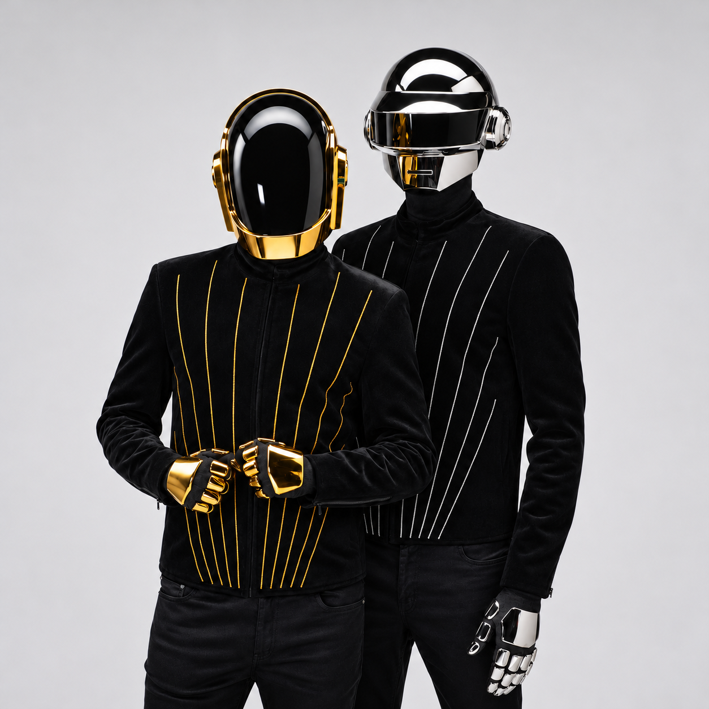
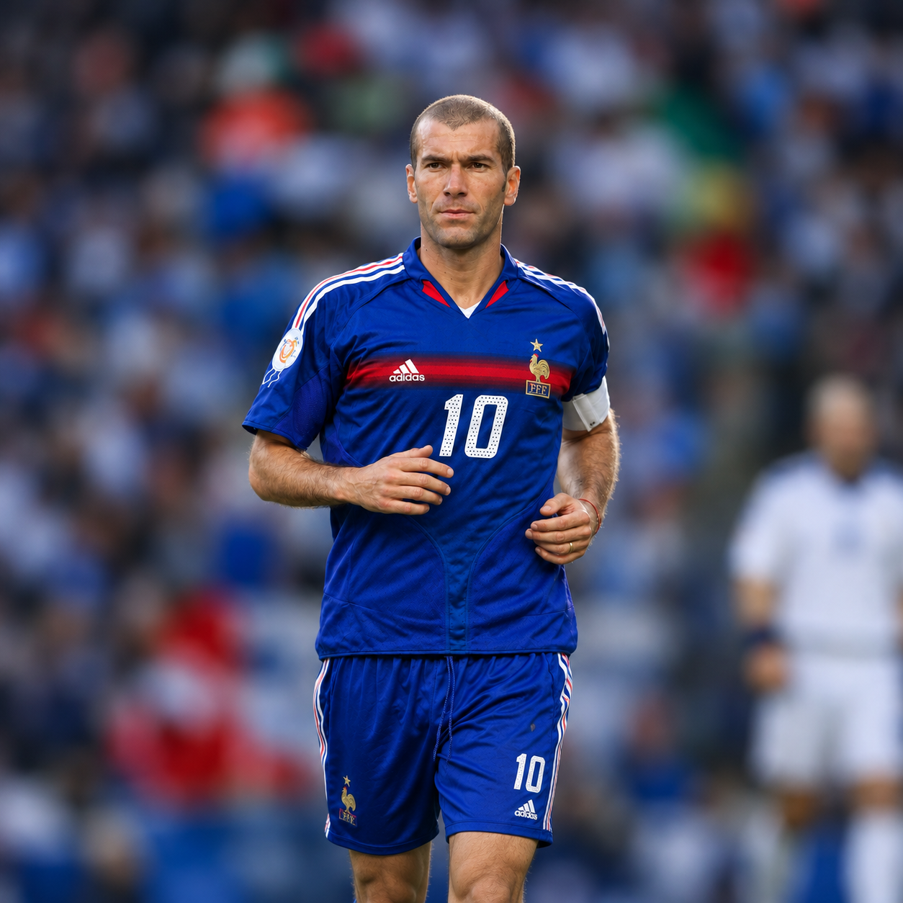
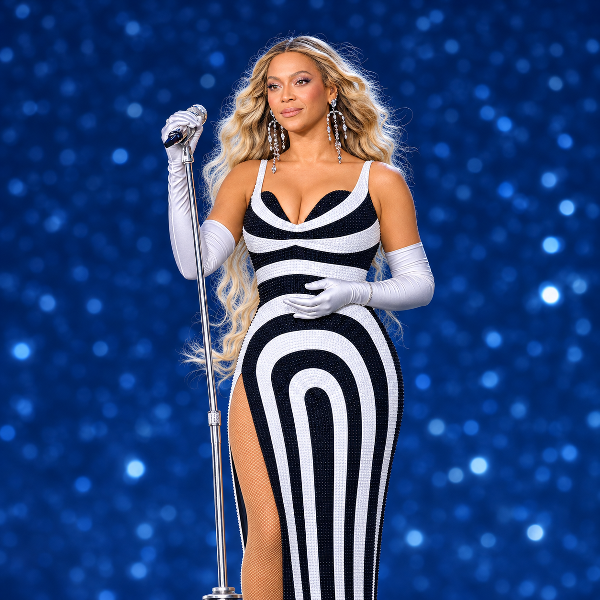

Daft Punk

Daft Punk est un duo français formé à Paris en 1993 par Thomas Bangalter et Guy-Manuel de Homem-Christo. Leur premier album, Homework (1997), contient « Da Funk » et « Around the World ». Discovery sort en 2001 avec « One More Time ». À partir de cet album, les deux musiciens n'apparaissent plus en public qu'avec des casques de robot. Random Access Memories (2013), avec le single « Get Lucky » enregistré avec Pharrell Williams et Nile Rodgers, gagne le Grammy de l'album de l'année en 2014. Le duo annonce sa séparation le 22 février 2021 dans une vidéo intitulée « Epilogue ».
Zinédine Zidane

Zinédine Zidane est né le 23 juin 1972 à Marseille. En finale de la Coupe du monde 1998, il marque deux buts de la tête contre le Brésil (3-0). Il reçoit le Ballon d'or la même année et gagne l'Euro 2000 avec la France. Au Real Madrid, sa reprise de volée du gauche en finale contre le Bayer Leverkusen donne au club la Ligue des champions 2002. Il termine sa carrière de joueur en finale de la Coupe du monde 2006, expulsé après un coup de tête sur Marco Materazzi. Comme entraîneur du Real Madrid, il remporte trois Ligues des champions de suite (2016, 2017, 2018). Il est sélectionneur de l'équipe de France depuis le 1er août 2026, pour quatre ans, jusqu'à la Coupe du monde 2030. Il succède à Didier Deschamps.
Beyoncé

Beyoncé Knowles est née le 4 septembre 1981 à Houston, au Texas. Elle commence dans le groupe Destiny's Child et sort son premier album solo, Dangerously in Love, en 2003, avec « Crazy in Love ». Lemonade (2016) est un album visuel accompagné d'un film d'une heure. En 2025, Cowboy Carter lui vaut le Grammy de l'album de l'année. Aucun autre artiste n'a remporté autant de Grammys qu'elle. Le 4 juillet 2026, elle a sorti un titre inédit, « Morning Dew (Donk) », son premier morceau en deux ans.